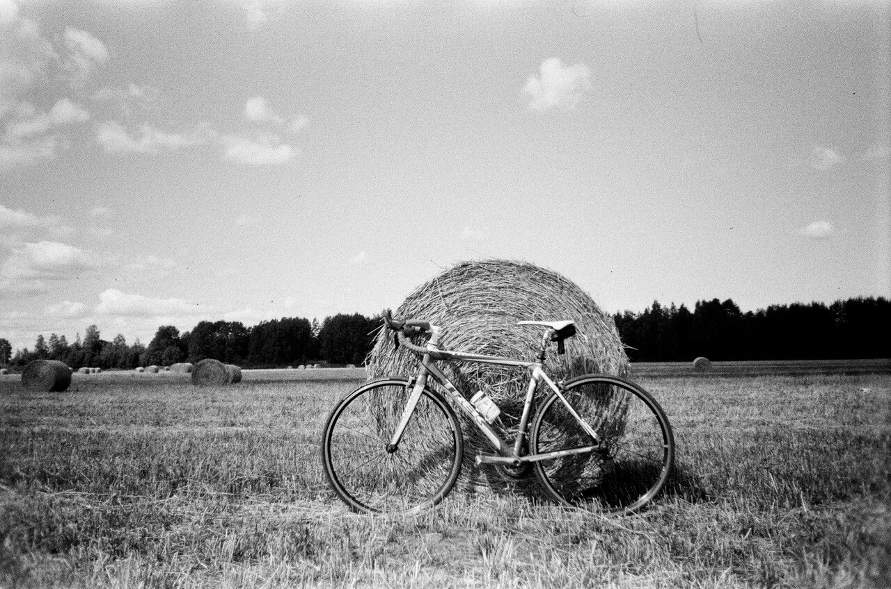
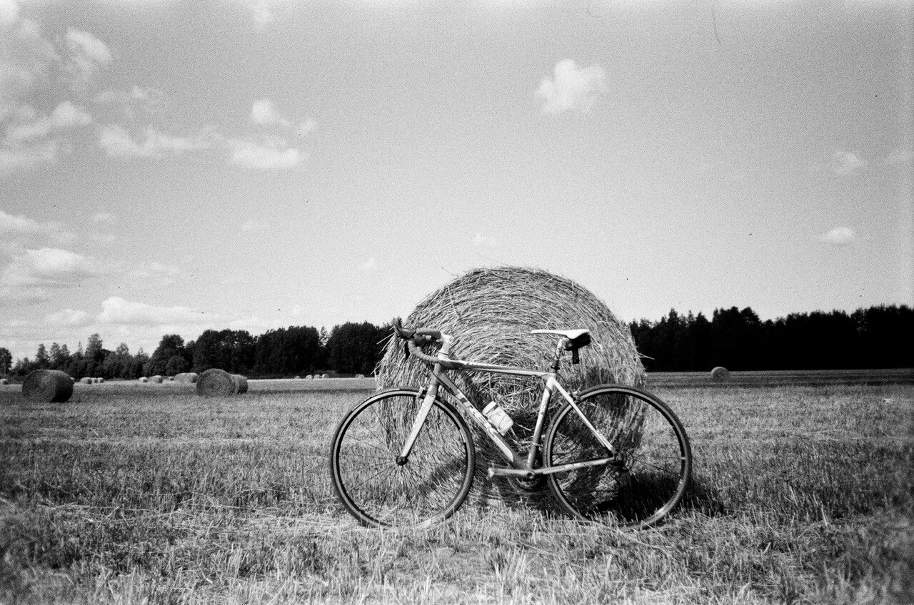

Философия туризма
Мы любим аскетичный образ туризма. Не брезгаем пользоваться природными материалами в бытовых целях. Готовим, в основном, на костре, жарим еду на камнях и палках, завариваем чай на кустах черники и еловых иголках.
Самые любимые для нас места те, которые недосягаемы для большинства, чтобы в них можно было насладиться природной тишиной и уединением. Если в пути попалось что-нибудь, то мы обязательно остановимся и изучим это, потому что в таких закоулках всегда можно найти что-то уникальное, будь то момент, вещица или осколок истории.